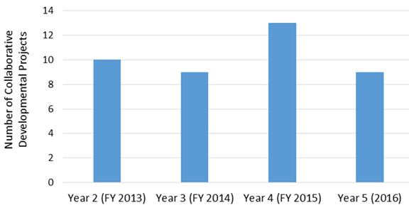
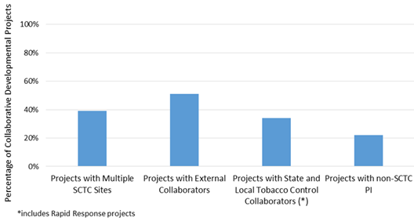
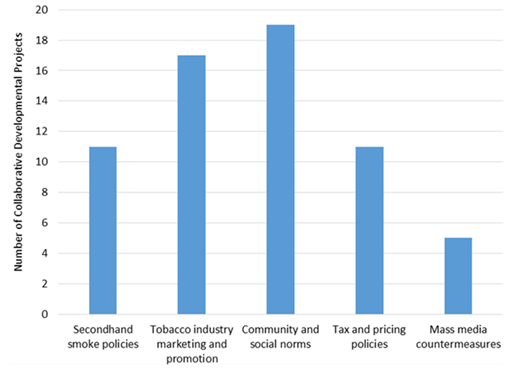

State and Community Tobacco Control Research Initiative
About the State and Community Tobacco Control Research Initiative
The SCTC Research Initiative consisted of five key components with the purpose to increase collaboration among researchers and projects and to promote innovative research that benefits state and community tobacco control efforts:
- Research Projects—Multiyear projects, each with multiple specific aims.
- Collaborative Developmental Projects—Short-term projects formed as collaborations among research projects and tobacco control partners to respond to emerging state and community research needs. These projects were also an opportunity for investigators to conduct novel pilot research.
- Working Groups—Ongoing collaborations between SCTC investigators and relevant stakeholders to address topic-specific gaps in research and practice.
- National Cancer Institute—The federal agency that funds the Initiative, contributed to the scientific direction of the Initiative, evaluated the process and impact of the Initiative, and promoted research findings for implementation.
- Coordinating Center—The Initiative resource that fostered communication and collaboration among initiative components and outside partners, participated in working groups and Initiative evaluation efforts, and facilitated dissemination of research findings for rapid implementation by state and community tobacco control programs.
Video: The Emerging Science in State and Community Tobacco Control Policy and Practice Forum 
This meeting was held on May 4, 2016, in Washington, D.C.
Agenda (PDF)
Research Project Sites
There were seven research projects at the core of the SCTC Research Initiative and one coordinating center.
Research Areas
The National Cancer Institute (NCI) funded a cooperative agreement for scientific research projects that addressed important understudied aspects of state and community tobacco control policy and media interventions. NCI supported both observational and interventional studies that addressed tobacco use and exposure in the United States while also examining the effectiveness of state and community tobacco control policy and media interventions.
The following areas are the broad research topics that SCTC focused on. Ongoing 5-year Research Projects (RP) as well as Collaborative Developmental Projects (CDP) support the efforts in each of these topic areas.
Community and Social Norms
Despite the increase in tobacco mass media countermeasures, secondhand smoke policies, tobacco access restrictions, tax and pricing policies, and availability of services and products to support cessation over the past 20 years, smoker quit rates have not improved. Community and social norms research looks at strategies to reduce the cancer burden by increasing smoker quit rates.
Mass Media Countermeasures
Young adults between the ages of 18 and 25 smoke cigarettes more than any other age group in the United States, but there are few smoking interventions tailored for or targeted at them. The tobacco industry invests millions of dollars in sophisticated marketing research on young adults, and much of this marketing focuses around activities in bars and nightclubs. This pro-tobacco marketing needs to be countered by public health efforts. Mass media countermeasures research uses the same venues used by the tobacco industry to reinforce nonsmoking messages and break the transition by young adults from experimentation and nondaily smoking to established smoking behavior.
Secondhand Smoke Policies
Secondhand smoke (SHS) exposure has serious health consequences and is especially dangerous to children. An increasing number of states and localities have implemented comprehensive policies prohibiting tobacco smoking in public places and worksites. Private homes and vehicles remain a major source of exposure to SHS for many people. The home is the primary source of SHS for children and nonsmoking adults. Research on secondhand smoke polices is focused on establishing smoke-free home rules to reduce exposure to SHS, help smokers quit, and reduce smoking initiation among youth.
Tax and Pricing Policies
Increases in tobacco product excise taxes are effective at raising tobacco prices, but people can avoid higher tobacco prices by buying online, on Native American reservations, or in lower tax jurisdictions; switching to cheaper brands/products; reducing spending on other goods/services to maintain tobacco use; or taking advantage of industry promotions that reduce tobacco product prices. Research on tax and pricing policies informs and addresses ways to close these loopholes.
Tobacco Industry Marketing and Promotion
Rapid changes in the media arena create challenges for tobacco control programs that can no longer rely as heavily on television advertising to reach a broad audience. Additionally, the tobacco industry and tobacco vendors are finding new ways to promote their products across other media platforms, such as websites, Twitter, Facebook, YouTube, and Tumblr. Tobacco Industry marketing and promotion research looks to assess the volume of tobacco-related information smokers and nonsmokers encounter, seek out, and share across media platforms and through social networks to identify effective strategies for combating tobacco Industry promotion and marketing.
Collaborative Development Projects
The purpose of these collaborative developmental projects (CDPs) within the SCTC initiative was to stimulate research that would respond to high-priority needs and emerging issues in tobacco prevention and control and to pilot promising practices that could be broadly adopted by state and community tobacco control programs. SCTC investigators were encouraged to conduct innovative, collaborative research across one or more of the SCTC research projects, with the SCTC Coordinating Center, and/or with various state and community, federal agency, or international partners. The investigators, along with their trainees, colleagues and community partners, were invited to submit applications for collaborative developmental projects that would provide an avenue for cross-site collaboration and for introducing and integrating new investigators and innovative technologies or methodologies, or new fields of research into the SCTC initiative, or more broadly to the science and practice of tobacco prevention and control. These funds supported SCTC investigators and their partners to work on projects of mutual interest and facilitated SCTC multi-site collaboration beyond what was originally proposed in the parent SCTC research projects.
A total of 41 CDPs were funded by the SCTC Research Initiative from 2012 to 2016. Figure 1 displays the number of CDPs funded by fiscal year. Ten projects were funded in Year 2 (FY 2013), 9 in Year 3 (FY 2014), 13 in Year 4 (FY 2015), and 9 in Year 5 (FY 2016).
Figure 1. Total SCTC Collaborative Development Projects

The extent to which the CDPs spurred collaboration beyond the parent SCTC research projects is reflected by the percentage of those that spanned multiple SCTC sites, those that engaged with external collaborators or people working in state or local tobacco control, and CDPs with principal investigators from outside the SCTC initiative Figure 2.
Figure 2. Collaborations among Collaborative Development Projects

The five high-priority research areas of state and community tobacco control policy and media interventions studied by the initiative were (1) community and social norms, (2) mass media countermeasures, (3) secondhand smoke policies, (4) tax and pricing policies, and (5) tobacco industry marketing and promotion. Figure 3 displays the number of CDPs that addressed these SCTC priority research areas from 2012 to 2016.

Non-Publication Research Products
The nature of the State and Community Tobacco Control Research Initiative advanced science through more than peer-reviewed publications. For a list of peer-reviewed publications associated with each grant, please refer to the list of non-publication research products. This includes products developed by the research sites such as videos and conference presentation information.